Hazel 游戏引擎笔记 018：通过 Pull Request 协作
本节来源：The Cherno 游戏引擎系列第 18 讲“拉取请求”，时长约 24 分 03 秒。
原课程与 Hazel 代码作者：The Cherno。
本文由视频字幕重构、翻译并整理，不是官方教材；PR 编号、合并结果和代码变化已结合同期 Hazel 仓库记录核对。
本节目标
上一讲讨论了 GitHub 的基础协作方式。本讲直接查看 Hazel 仓库中正在等待处理的 Pull Request，并演示一个完整的维护者工作流：
graph LR
A[社区提交 PR] --> B[阅读说明与 diff]
B --> C[参与讨论]
C --> D{是否适合当前项目}
D -- 接受 --> E[请求更新或直接合并]
D -- 不适用 --> F[解释原因并关闭]
D -- 需要更多讨论 --> G[暂时保持打开]
E --> H[拉取到本地并验证]
关键点不是“所有 PR 都必须合并”，而是让提案、理由、冲突和验证过程都公开可见。PR 同时承担三种功能：
- 提交代码变化；
- 讨论设计取舍；
- 记录为什么最终接受、修改或拒绝某项建议。
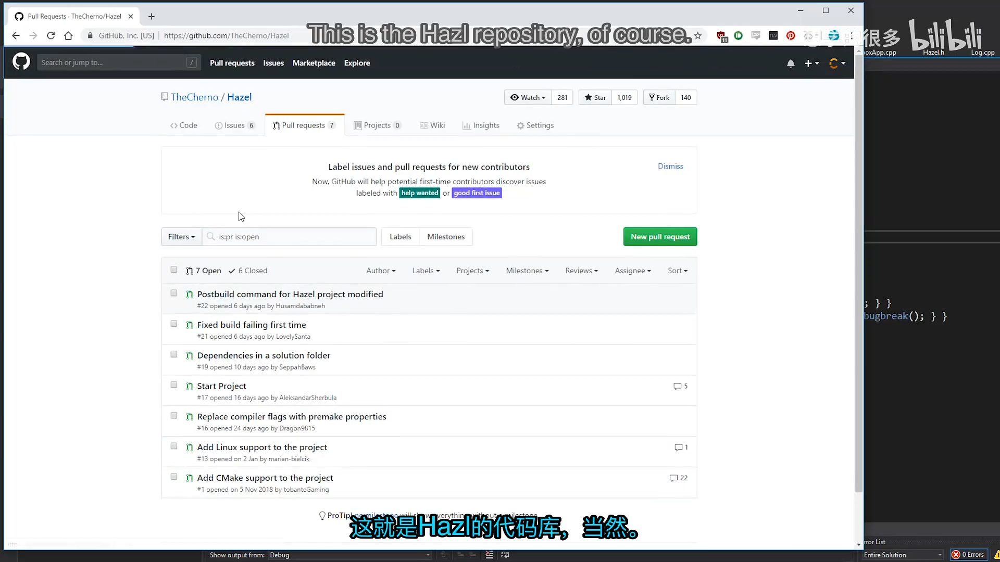
📷 Hazel 仓库中的 Pull Request 列表
回到原视频 (00:02:03)
1. GitHub 协作不止是“提交代码”
(参考时间: 00:00:15)
很多编程教程只讲代码怎么写，却很少解释团队中如何共同维护同一套代码。Cherno 认为，Pull Request 是连接以下两件事的核心机制：
- 代码在版本控制系统中如何演化；
- 开发者如何讨论、审查和验证这些变化。
即使团队不使用 GitHub，分支、变更审查和合并的基本思想仍然适用于其它版本控制系统。PR 让一个改动从“某个人本地能运行”变成“项目可以共同理解和接受的变更”。
对学习 Hazel 的人来说，参与 PR 还有额外价值：读者不再只是逐集抄写代码，而是在真实分支、冲突、讨论和审查中体验软件工程。
1.1 讨论比“谁对谁错”更重要
Cherno 特别强调，社区讨论应该保持友好和安全。维护者可能忘记某个改动，也可能不知道更好的实现方式；参与者可以指出问题，但没有必要用技术优越感压制别人。
一个 PR 即使最终没有被合并，只要讨论清楚，也能成为所有参与者共同学习的记录。
2. 第一批讨论型 PR
(参考时间: 00:03:46)
仓库里有一些 PR 并没有立刻进入可合并状态，但它们很适合说明维护者如何评估提案。
2.1 用 unique_ptr 替换原始指针
PR #2：
Use unique pointers instead of raw pointers
提案希望把创建 Application 时的原始指针改成 std::unique_ptr，让资源自动释放。同时，PR 还增加了构建后复制 DLL 的步骤。
Cherno 解释了为什么不接受 unique_ptr 部分：
int main(int argc, char** argv)
{
Hazel::InitCore();
auto app = Hazel::CreateApplication();
app->Run();
delete app;
Hazel::ShutdownCore();
}
他的理由包括：
- Application 在进程生命周期中本来就只有一个；
- 他希望显式控制删除和 Shutdown 的顺序；
Hazel::Application*比std::unique_ptr<Hazel::Application>更直接；- 原始指针并不自动等同于设计错误，关键是要有明确的所有权约定。
他还指出，main() 末尾的 return 0; 不是必需的，并引用 cppreference 对程序入口返回值的说明。构建后复制 DLL 的想法本身是好的，但下一集将切换到 Premake，手写 Visual Studio 工程的行为很快会过时。
这个 PR 展示了重要的一点：提案可以包含多个变化，但维护者应逐项判断，而不是整包接受或整包拒绝。
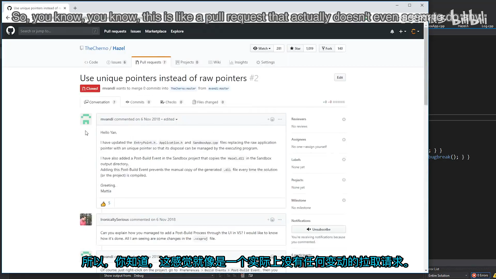
📷 PR #2 中关于 unique_ptr、原始指针和显式释放顺序的讨论
回到原视频 (00:04:14)
2.2 CMake 与 Premake 的重复维护
PR #1：
Add CMake support to the project
提案认为 CMake 能改善跨平台和 IDE 支持，尤其是在 CLion、VS Code 等环境中直接打开项目。讨论中支持者认为 CMake 通用，反对者则指出 Hazel 已经选择 Premake，同时维护两套构建系统会产生重复工作。
Cherno 倾向于继续使用 Premake：
- Premake 已经足够完成当前构建需求；
- Premake 使用 Lua 配置，语法更直接；
- 项目刚开始时同时引入 CMake 会增加维护面；
- 是否真正支持 Linux 和 macOS，还需要经过实际环境验证。
他在视频中没有立刻关闭这个 PR，而是保留讨论。
编者说明：从当前 GitHub 状态看，PR #1 后来被关闭且没有合并。视频记录的是当时的讨论状态，而不是最终仓库状态。
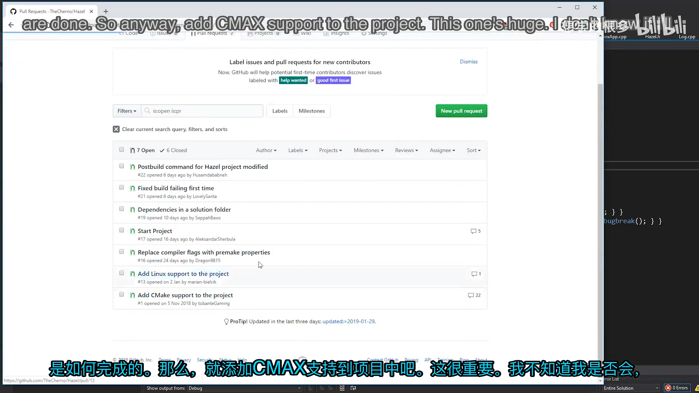
📷 CMake 与 Premake 的重复维护讨论
回到原视频 (00:06:49)
2.3 Linux 支持与分支冲突
PR #13：
Add Linux support to the project
Linux 支持涉及 Premake 配置、Linux 入口以及 GCC 编译问题，是一项比单个文件修复更大的改动。该 PR 当时已经产生冲突，说明它落后于主分支，不能直接合并。
Cherno 的回复不是简单拒绝，而是要求作者更新分支并确认可以构建：
请更新这个分支，确认它已经准备好合并。
我很愿意把它合并进来。
这正是维护冲突 PR 的常见流程：
flowchart TD
A[PR 与主分支冲突] --> B[请求作者同步最新主分支]
B --> C{是否能无冲突合并}
C -- 否 --> D[作者解决冲突并重新测试]
D --> C
C -- 是 --> E[维护者本地验证]
E --> F{验证通过}
F -- 是 --> G[合并]
F -- 否 --> B
编者说明：该 PR 后来没有直接合并，而是转移到新的 Linux 支持 PR #27。
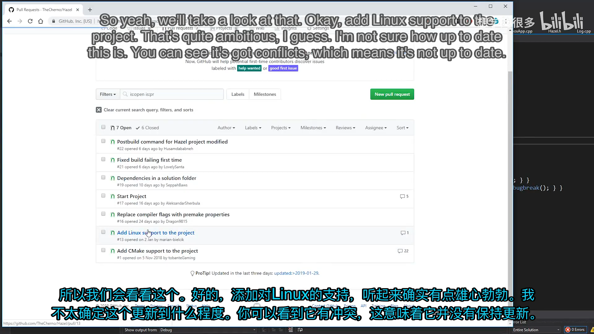
📷 Linux 支持 PR 存在冲突，需要先更新分支
回到原视频 (00:07:36)
2.4 已经过时的编译参数 PR
PR #16：
Replace compiler flags with premake properties
该 PR 建议用 Premake 属性代替直接写 /MDd、/MD 等编译器参数：
filter "configurations:Debug"
runtime "Debug"
staticruntime "Off"
filter "configurations:Release"
runtime "Release"
staticruntime "Off"
但 Hazel 已经完成同类修改，因此这个 PR 不再需要。维护者把它标记为：
Obsolete; this has already been done.
这提醒贡献者：提交 PR 前先同步最新主分支，并检查是否已经有人完成相同改动。
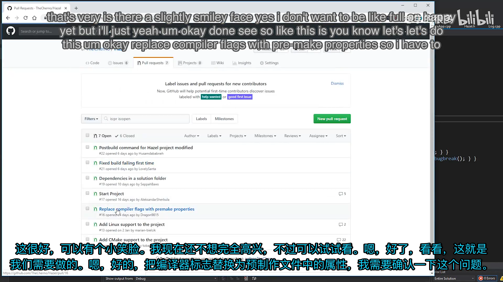
📷 编译参数 PR 已被新的 Premake 属性方案取代
回到原视频 (00:08:41)
3. 合并 Start Project PR
(参考时间: 00:10:00)
一个较小 PR 为解决方案增加了启动项目。Premake 提供了 startproject 属性：
startproject "Sandbox"
这样 Visual Studio 打开解决方案后，会默认把 Sandbox 设为启动项目。
视频中先把这个属性放在项目作用域附近，随后 Premake 报错：
Unable to set start project.
Project scope should be in workspace.
原因是 startproject 必须属于 workspace 作用域，而不是某个 project。正确位置是：
workspace "Hazel"
architecture "x64"
startproject "Sandbox"
configurations
{
"Debug",
"Release",
"Dist"
}
修正后，Sandbox 会立即成为默认启动项目。
这次错误也说明：PR 被合并并不代表所有细节都已验证。维护者仍然应在本地拉取代码并运行。
graph TD
A[发现 PR 有价值] --> B[阅读 diff 和讨论]
B --> C[合并到主分支]
C --> D[本地 git pull]
D --> E[重新生成项目]
E --> F{是否成功}
F -- 是 --> G[完成]
F -- 否 --> H[修复并提交本地变更]
H --> G
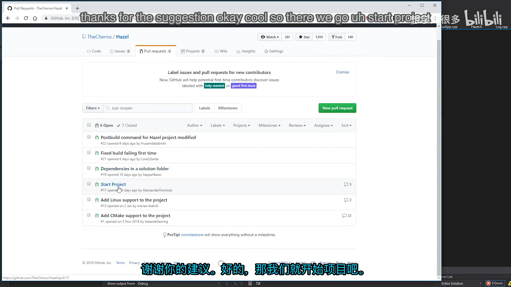
📷 Start Project PR 中添加 startproject 属性
回到原视频 (00:10:00)
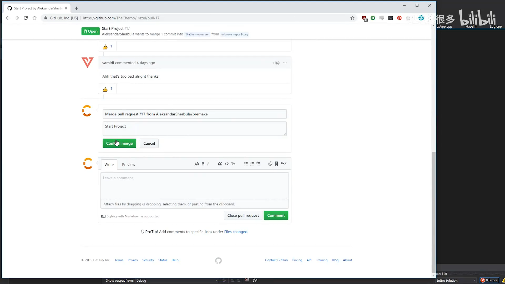
📷 在 GitHub 页面中合并 Pull Request
回到原视频 (00:10:46)
3.1 合并后同步本地仓库
(参考时间: 00:11:27)
GitHub 上的合并只改变远端仓库。维护者仍需要在本地执行同步：
git status
git pull
视频中本地还有未提交文件。此时先查看差异、补充提交，再拉取远端变化：
git add <files>
git commit -m "Now linking runtime library dynamically"
git push
git pull
如果本地提交和远端合并都修改了主分支，Git 可能生成一次 merge 提交。关键不是避免所有 merge commit，而是保证：
- 本地不存在误提交的临时文件；
- 提交信息能说明改动的目的；
- 拉取后重新构建并确认合并结果正常。
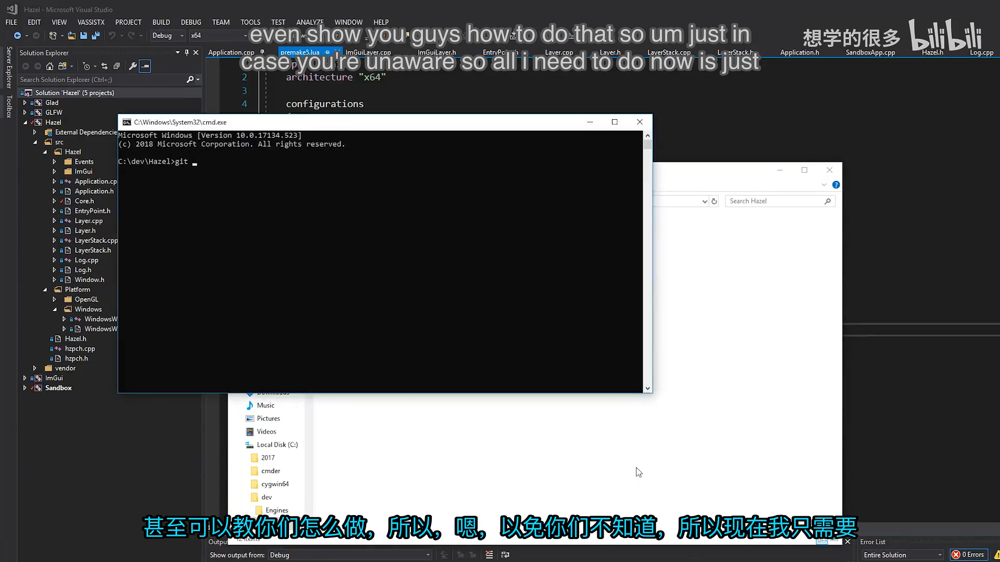
📷 拉取远端 PR 合并结果并处理本地未提交变化
回到原视频 (00:11:31)
4. 解决依赖分组 PR 的冲突
(参考时间: 00:14:07)
PR #19：
Dependencies in a solution folder
该 PR 把第三方依赖从解决方案根目录移动到 Dependencies 分组，减少项目列表的杂乱程度：
group "Dependencies"
include "Hazel/vendor/GLFW"
include "Hazel/vendor/Glad"
include "Hazel/vendor/imgui"
group ""
最后的 group "" 很重要，它表示依赖分组到此结束，后续项目重新回到默认分组。
不过维护者刚刚修改了同一个 premake5.lua，所以 PR 出现冲突，暂时不能合并。Cherno 要求作者更新分支：
Please update this so that I can merge. 🙂
作者同步后回复 There you go，冲突被解决。
编者说明：该 PR 在视频之后才正式合并，但它展示的依赖分组方式最终进入了 Hazel 仓库。
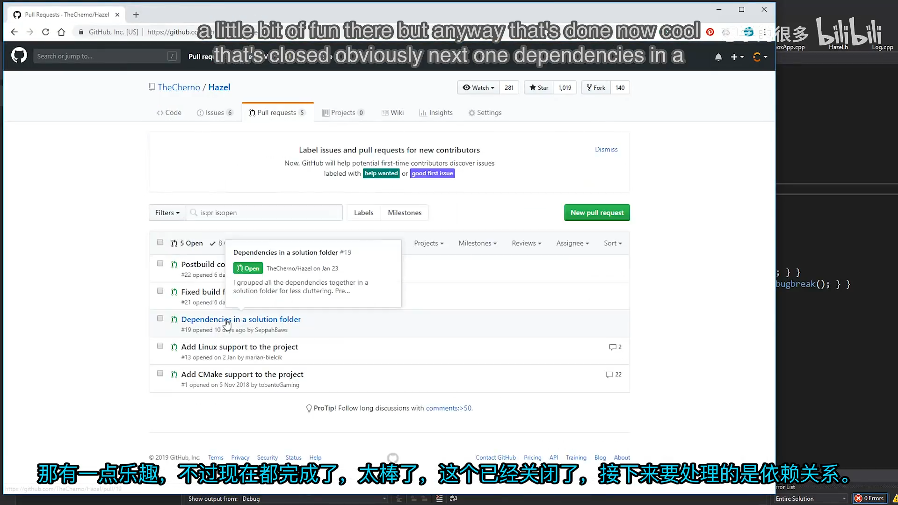
📷 通过 group 和空 group 结束标记整理依赖项目
回到原视频 (00:14:07)
5. 修复首次构建失败
(参考时间: 00:14:52)
5.1 复现问题
问题发生在清理 bin 目录后第一次构建 Sandbox 时。Hazel DLL 已经生成，但构建后复制命令失败，因为目标 Sandbox 目录尚不存在。
复现过程是：
删除 bin
-> 重新生成 Visual Studio 工程
-> 构建 Sandbox
-> 后置复制命令失败
原命令类似：
postbuildcommands
{
("{COPY} %{cfg.buildtarget.relpath} ../bin/" ..
outputdir .. "/Sandbox")
}
Premake 或 Windows 的复制行为把目标解释成文件而不是目录，导致第一次构建失败。
flowchart TD
A[删除 bin 目录] --> B[重新生成工程]
B --> C[构建 Sandbox]
C --> D{Sandbox 目标目录存在}
D -- 否 --> E[复制 Hazel DLL 失败]
D -- 是 --> F[复制成功]
E --> G[需要修复目标路径或先创建目录]
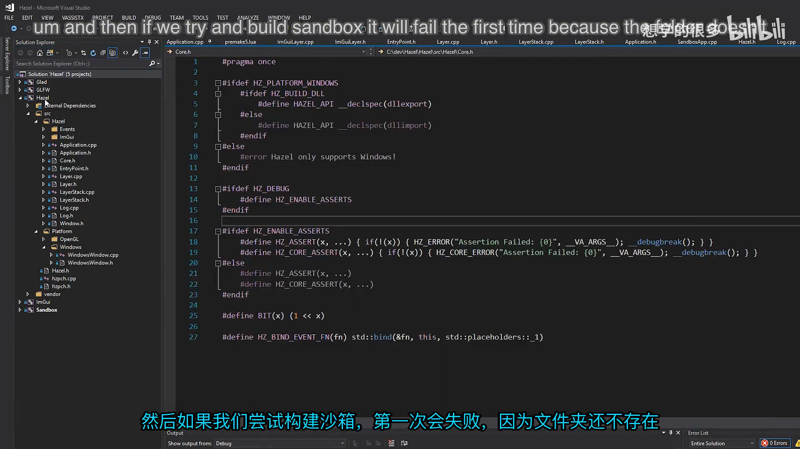
📷 删除 bin 后重新构建以复现首次构建失败
回到原视频 (00:16:00)
5.2 两种修复方案
PR #21：
Fixed build failing first time
第一种方案在复制前主动创建目录：
postbuildcommands
{
("IF NOT EXIST ../bin/" .. outputdir ..
"/Sandbox mkdir ../bin/" .. outputdir .. "/Sandbox"),
("{COPY} %{cfg.buildtarget.relpath} ../bin/" ..
outputdir .. "/Sandbox")
}
它能解决问题，但增加了一整条命令，而且只处理“目录不存在”这一种情况。
PR #22：
Postbuild command for Hazel project modified
第二种方案只修改目标路径格式：
postbuildcommands
{
("{COPY} %{cfg.buildtarget.relpath} " ..
"\"../bin/" .. outputdir .. "/Sandbox/\"")
}
关键变化有两点：
- 目标路径增加引号；
- 路径末尾保留
/。
引号可以让 Premake 保留结尾斜杠，也避免路径中包含空格时被错误拆分。Windows 接收带结尾斜杠的路径后，会把它理解成目录。
Cherno 更喜欢第二种方案，因为改动更小、意图更清楚，不需要额外写 IF NOT EXIST 和 mkdir。
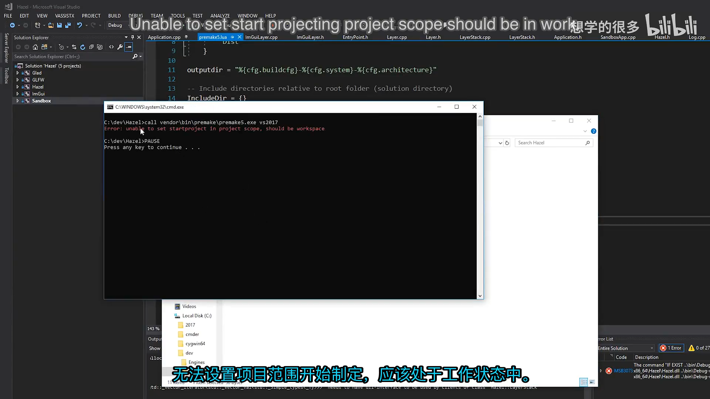
📷 第一次构建失败与两个修复方案的对比
回到原视频 (00:17:47)
5.3 验证修复
修复后再次删除 bin，重新生成项目并构建 Sandbox。此次构建成功，说明路径在目录不存在时也能被正确创建或处理。
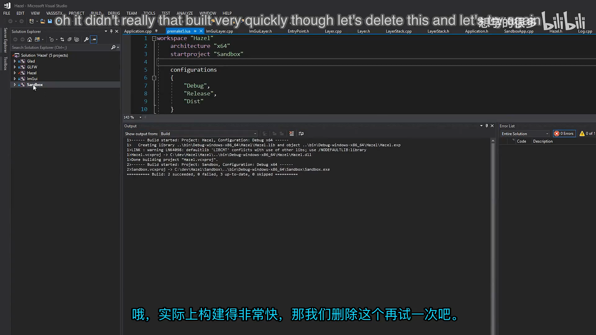
📷 清理 bin 后首次构建成功
回到原视频 (00:18:25)
Cherno 没有直接替作者提交代码，而是请求贡献者更新自己的分支：
Please update this so that I can merge it. 🙂
这样做既保留贡献记录，也让 PR 作者获得对应的协作信用。作者更新后，PR #22 被合并。
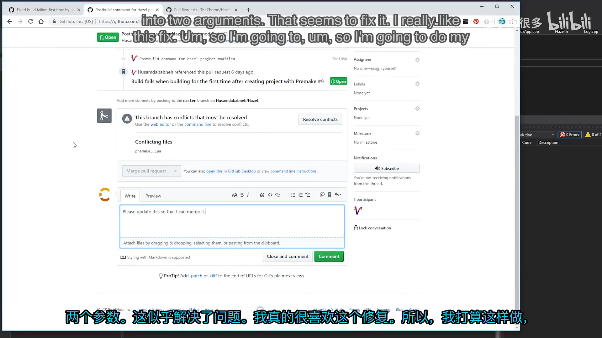
📷 请求贡献者更新分支后再合并
回到原视频 (00:19:29)
6. 如何自己提交一个 Pull Request
(参考时间: 00:21:30)
一个标准协作流程如下：
- Fork Hazel 到自己的 GitHub 账号；
- 克隆自己的 fork；
- 创建描述明确的分支；
- 完成修改并在本地构建、测试；
- 提交并推送到自己的 fork；
- 从功能分支向 Hazel 主分支发起 PR；
- 在 PR 页面查看完整 diff；
- 回应评论并更新分支；
- 维护者验证后合并。
sequenceDiagram
participant D as Developer
participant F as Fork
participant H as Hazel
participant M as Maintainer
D->>H: Fork 仓库
D->>F: 创建功能分支
D->>F: commit + push
D->>H: 发起 Pull Request
M->>H: 阅读说明、diff 和讨论
M-->>D: 请求修改或说明原因
D->>F: 更新分支
F-->>H: PR 自动更新
M->>H: 验证并合并
一个有效的 PR 说明至少应回答：
- 这个改动解决什么问题？
- 为什么采用当前方案？
- 修改了哪些模块？
- 如何构建和验证？
- 是否存在相关 Issue 或前序 PR？
在视频中，维护者会使用 #22 这样的引用链接把 PR 和 Issue 连接起来，保持讨论上下文可追踪。
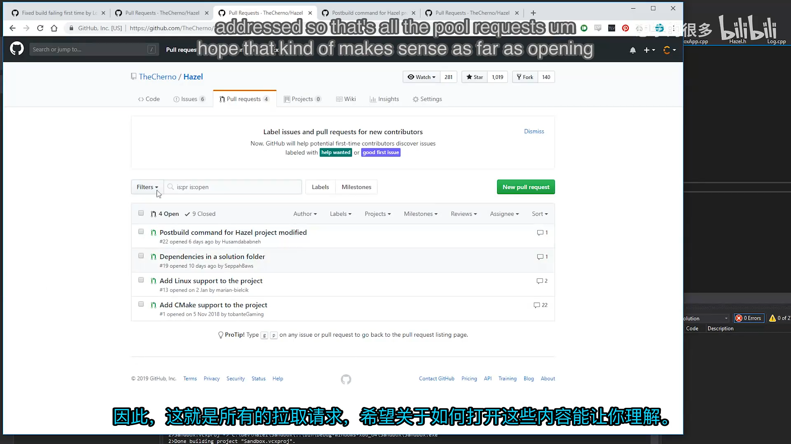
📷 从 fork、分支到 Pull Request 和合并的完整流程
回到原视频 (00:21:30)
7. 维护者应该如何处理 Pull Request
本讲实际上给出了一个可复用的审查清单：
7.1 先理解动机，再看实现
PR 描述和讨论能说明作者为什么修改。只看 diff 容易把“设计方向不同”误判为“实现错误”。
7.2 逐项评估变化
一个 PR 可能有多个目的。维护者应分别判断每个部分，而不是整包接受。
7.3 在合并前测试
自动合并按钮不会替你运行项目。startproject 作用域错误和首次构建失败都说明，合并后仍需在本地重新生成并构建。
7.4 冲突时请求更新
如果 PR 落后于主分支，应要求作者 rebase 或合并最新主分支，而不是在维护者侧猜测冲突的正确解决方式。
7.5 给出明确结论
维护者可以选择：
| 结论 | 适用情况 |
|---|---|
| Merge | 方案合理、无冲突、验证通过 |
| Request update | 方向可行，但分支过期或实现需调整 |
| Keep open | 需要继续讨论，暂时不宜决定 |
| Close / obsolete | 已被其它改动覆盖 |
| Close / not planned | 与项目方向不一致，且已解释原因 |
7.6 保留贡献信用
如果贡献者有时间和能力更新分支，维护者不应直接复制代码替对方提交。请求作者更新既能让贡献记录归到正确的人，也能让贡献者真正参与完整流程。
8. 本节结论
本讲通过真实 PR 展示了团队协作的关键环节：
- PR 不只是代码提交，也是设计讨论与知识沉淀；
- 维护者需要区分已接受、待讨论、过时和与项目方向不符的提案；
- 合并 PR 后必须同步本地
main并重新构建； - 冲突通常由 PR 作者更新分支解决；
startproject必须位于 Premake workspace 作用域；- 构建后复制路径使用引号和结尾斜杠，可以避免首次构建失败；
- 小型、目标清楚的修复通常更容易审查和合并；
- 请求贡献者更新分支，可以保留协作记录与贡献信用。
下一讲将回到 Hazel 的实际开发，开始处理键盘、鼠标编码与输入轮询。
附：相关 PR 与参考
- Bilibili 精译视频：018 - 拉取请求
- PR #1：Add CMake support to the project
- PR #2：Use unique pointers instead of raw pointers
- PR #13：Add Linux support to the project
- PR #16：Replace compiler flags with premake properties
- PR #19：Dependencies in a solution folder
- PR #21：Fixed build failing first time
- PR #22：Postbuild command for Hazel project modified
- C++ 程序入口返回值说明
- The Cherno 的 Hazel 仓库